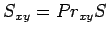

Inhalt Index DeskTop Bronstein

 Integralrechnung Oberflächenintegrale Oberflächenintegrale 2. Art Berechnung des Oberflächenintegrals 2. Art
Integralrechnung Oberflächenintegrale Oberflächenintegrale 2. Art Berechnung des Oberflächenintegrals 2. Art


Ist die Fläche S durch die Gleichung
| (8.158) |
explizit vorgegeben, dann wird das Integral (8.157a) nach der Formel
| (8.159a) |
berechnet, wobei gilt . Die Oberflächenintegrale der Funktion f(x,y,z) über die Projektionen des Flächenstückes S auf die anderen Koordinatenebenen werden analog berechnet:
| (8.159b) |
wobei die Gleichung der Fläche S nach x aufgelöst ist und Syz = PryzS zu setzen ist.
| (8.159c) |
wobei die nach y aufgelöste Gleichung der Fläche S ist und Szx = Przx S zu setzen ist. Wenn die Orientierung der Fläche geändert wird, d.h., wenn die Außen- mit der Innenseite vertauscht wird, dann ändert das Integral über die Projektion sein Vorzeichen.